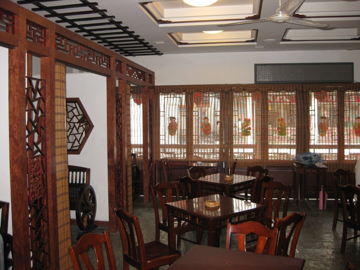
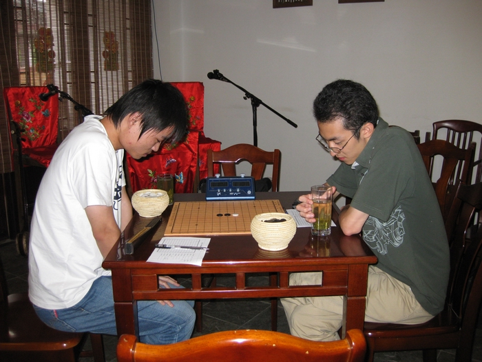
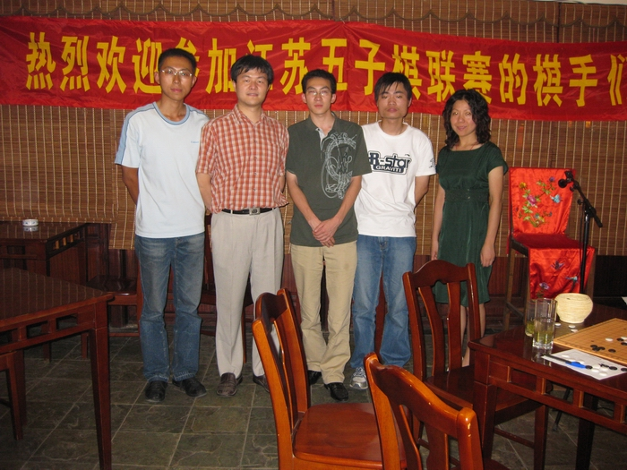

江苏联赛第二场结束
#1 江苏联赛第二场结束 作者：小丸.net 发表时间：2008-8-18 20:21:53
苏州地区负责人傅亮,15号下午16:40分在观前春雷茶馆摆好棋具,接下来赶往车站接张家港来的陈靖,却在茶馆门口接到了风尘朴朴的杨彬(江南新绿),当时他吃了一惊,后来才明白,杨彬总是来无影去无踪......
接到陈靖,傅亮把他们安顿在观前附近的旅社里.
由于人员过少,所以当天晚上就由苏州地区的傅亮和其它地区的棋手进行一些交流.
16号上午他们拆了一上午的棋。并迎来了吴江和苏州的其它棋手.
下午抽签之后，由郑勇对阵陈靖。郑勇开出松月，陈靖交换之后，郑勇留下了一打必胜点。结果道道的进攻滴水不漏，没有任何疑问的黑棋胜。
接着来是联棋交流，傅亮和郑勇对杨彬和陈靖。第一局傅亮和郑勇胜；第二局杨彬和陈靖胜。
吃完晚饭傅亮对阵郑勇，郑勇开局。郑开了银月，傅没有换，考傅一个白4跳2弱防守。郑勇最终获胜。白棋有一手明显防错了。第一天比赛结束，执黑方都没有辜负白棋，面对对手的考题都能够从容应对。

17号,上午进行了最后一场的角逐,也许傅亮在猜先时运气差了一点,加上江阴的两轮,傅亮最后五轮全部是假白,陈靖用他研究了很久的超级弱防来考傅亮,傅亮果然上当,当傅亮眼睁睁的看着陈靖形成四三时,大呼上当之余投子认负.通过这轮比赛,傅亮也总结出了一个道理:东道主一般都是全败.
下午,傅亮带棋手游览了苏州观前街,游览后活动结束.

由于此前杨彬与康岩在无锡赛区的自赛中,杨彬从康岩手中夺走一分.最后积分如下:
陈靖以四分排积分榜首,苏州郑勇和杨彬以3.5分紧追以后,王烨林在少战二轮的情况下,仍以3分优势排名第三.
据悉,下一场联赛很可能将于国庆期间在江苏省会南京举行.
#2 Re:江苏联赛第二场结束 作者：雅匪 发表时间：2008-8-18 23:29:26
俺的回帖哪去 l i a o#3 Re:江苏联赛第二场结束 作者：17号蓝星仔 发表时间：2008-8-28 14:20:10
茶庄的环境真好 真想去玩玩
#4 Re:江苏联赛第二场结束 作者：自来自去 发表时间：2008-8-30 14:50:44
你好，我想知道在南京比赛时我能去看吗？我在南京上学的
#5 Re:江苏联赛第二场结束 作者：松痕 发表时间：2008-9-3 8:48:06
上楼，你还可以去下啊。